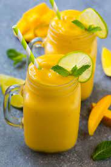

Back To Home
Mango Smoothie

This super creamy and refreshing mango smoothie is the ultimate summertime smoothie, just perfect to cool you down on a hot summer day.
It is super simple to make. Just toss all your ingredients into a blender and blend until smooth and your deliciously creamy mango smoothie will be ready just in a minute.
Ingredients
- 3 Cups Frozen Mangoes
- 1 Large Frozen Banana
- 1/2 Cup Milk (Dairy Or Dairy-free)
- 1/2 Cup Greek Yogurt (Dairy Or Dairy-free)
Instructions
- Place the milk, frozen mangoes, frozen banana, and greek yogurt into your blender (always remember to add your liquid first into the blender, that will help your blender to run a little more smoothly).
- Blend until completely smooth and creamy.
- Pour into 2 large glasses, garnish with some mint leaves, pop in a straw and serve.
Note
You can use fresh mangoes and banana instead of frozen, just add a handful of ice cubes to your blender in that case. So the smoothie will still be nice and thick and cold.